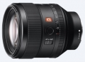
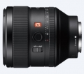
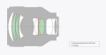

器材库 > 35mm画幅AF定焦镜头 > FE 85/1.4 GM

详细规格
镜头类型
中远摄/远摄镜头
发布日期
2016-02-04
厂家推荐价格
1,799.99 （美元）
焦距
85mm
最大光圈
f/1.4
最小光圈
f/16
视角（对角）
29°
镜头结构
11片/8组
非球面镜片
1片
低/超低色散镜片
3片
光圈叶片
11片
最近对焦距离
AF 85cm / MF 80cm
最大放大倍率
0.12
滤镜口径
77mm
镜头卡口
Sony E
防抖
否
颜色
黑色
尺寸
89.5×107.5mm
重量
820g
附件
遮光罩，镜头前盖，镜头后盖，镜头袋
备注
防尘防滴溅功能
cybertron2018-08-16 22:364.42 分
操作性 5.00耐用性 4.50性价比 4.00解像力 4.50色彩还原 4.50机械结构 4.00
alkcsling2018-04-09 10:414.25 分
操作性 5.00耐用性 4.50性价比 1.50解像力 5.00色彩还原 4.50机械结构 5.00
wanjiash2018-01-23 00:545 分
操作性 5.00耐用性 5.00性价比 5.00解像力 5.00色彩还原 5.00机械结构 5.00
xgl8902016-04-14 10:264.92 分
操作性 5.00耐用性 5.00性价比 4.50解像力 5.00色彩还原 5.00机械结构 5.00
luojiubei2016-04-03 23:484.5 分
操作性 4.50耐用性 4.50性价比 4.00解像力 5.00色彩还原 4.50机械结构 4.50
产品图 / 样片
FE 85/1.4 GM

FE 85/1.4 GM

FE 85/1.4 GM
评测 / 相关文章
- 详细内容 （存档）
- 外柔内刚 索尼FE 85mm F1.4GM评测 （存档）
- ［试用］天然去雕饰 索尼G大师85/1.4拍娃记 （存档）
- ［资讯］Imaging Resource公布年度镜头获奖结果 （存档）
- ［试用］FE50/1.4ZA与FE85/1.4GM怎么选 （存档）
- ［试用］诠释经典 索尼FE 85/1.4 GM新镜皇登基 （存档）
- ［资讯］DxOmark公布FE85mm f/1.4GM跑分 （存档）
- ［资讯］索尼斩获5项2016 EISA大奖 （存档）
- ［试用］新欢蜜月 索尼FE 85/1.4GM实拍体验 （存档）
- ［资讯］EISA公布2016-2017年度器材奖项 （存档）
- ［试用］谁是E口人像王 索尼GM85 PK蔡司Batis85 （存档）
- ［试用］索尼85GM和蔡司Batis85锐度对比 （存档）
相关文章
- ［试用］天然去雕饰 索尼G大师85/1.4拍娃记 （存档）
- ［资讯］Imaging Resource公布年度镜头获奖结果 （存档）
- ［试用］FE50/1.4ZA与FE85/1.4GM怎么选 （存档）
- ［试用］诠释经典 索尼FE 85/1.4 GM新镜皇登基 （存档）
- ［资讯］DxOmark公布FE85mm f/1.4GM跑分 （存档）
- ［资讯］索尼斩获5项2016 EISA大奖 （存档）
- ［试用］新欢蜜月 索尼FE 85/1.4GM实拍体验 （存档）
- ［资讯］EISA公布2016-2017年度器材奖项 （存档）
- ［试用］谁是E口人像王 索尼GM85 PK蔡司Batis85 （存档）
- ［试用］索尼85GM和蔡司Batis85锐度对比 （存档）
- ［试用］刀锐奶化 索尼FE85/1.4GM上手体验 （原站已下线）
- ［试用］外柔内刚 索尼FE 85mm F1.4GM评测 （存档）
- ［试用］索尼FE85mm F1.4GM实拍样张 （原站已下线）
- ［行情］老婆给了五万块 购买器材真叫爽 （存档）
- ［资讯］小身材也有大能量 索尼微单选购全攻略 （存档）
- ［资讯］外媒拆解索尼85mm F1.4 GM镜头 （原站已下线）
- ［资讯］索尼专访：GM镜头专为高像素而生 （存档）
- ［资讯］索尼全新高端G系列全画幅镜头发布 （存档）